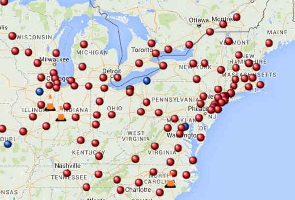
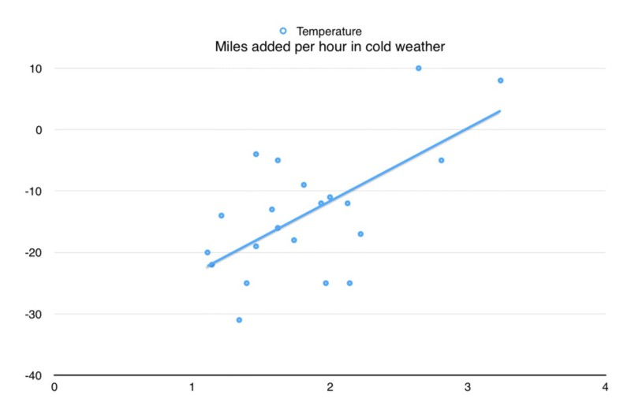

I’ve owned a Tesla in Brooklyn for about 10 months now. This is what I’ve learned so far. A Tesla in Brooklyn isn’t that hard.
I park my car on the street and have no regular place to plug in the car. This is very much like having a cell phone that you can only charge at the office or in coffee shops — kind of weird, takes a little bit of planning, but it can work. The car is so much fun that dealing with it is actually fun. The city is a tough environment. When I’m worried about leaving it on the street, mainly during snow storms where I don’t want to get buried in by a snow plow, I park it in a garage. See how well that works out when the snow all suddenly melts:
I picked up the car from the Syosett service center 10 months ago and I’ve put over 11,000 miles on it since then. I drive the car to work everyday, through the soupy New York summers and through the increasingly mild winters. I’ve taken the car camping up in the woods away from the Supercharging network, as well as up in the mountains where we had few days of -20 degree weather. (Coldest it got was -31F, which for the metric folks around is about -34C, which for anyone or anything is not a great temperature to be in. The ice skating was fun.)
The best thing is flooring it off of a stop sign and going to 40 MPH in a second or so. Faster than a Ferrari, greener than a Prius.
The three zones
When you own an electric car, you are in one of 3 zones:
- Radius of home, where you plug in every night and drive less than the range.
- Road trips, highway driving on the Supercharger network, where you go from charger to charger to final destination, basically taking a bathroom break every 2 hours.
- Range mode: Repurposing the public electric network, charging from regular outlets, the (suprisingly extensive) RV power network, or public charging stations. This is my Brooklyn tesla experience.
Zone 1: Home Zone
I imagine that most Tesla drivers live in Zone 1, where honestly there’s nothing to think about. The Oatmeal wrote a comic about just using the regular 110v outlet to charge his car at http://theoatmeal.com/comics/tesla_model_s not even bothering with a “fancy plug”. This gives you about 4 miles of charge per hour. If you drive for less then 40 miles a day and leave it plugged in for 10 hours at night the car is always full. (And even if it’s not, you probably are at home over the weekend enough to top off the rest.)
I have a house outside of the city I use in the summer, and I asked an electritian to put a drier plug in my garage, a standard 220volt 40 amp circuit, which cost a couple hundred dollars to install. This puts 17 miles of charge per hour on the car, so an overnight charge puts 170 miles per night on the car. Which is way more than my normal driving day, but cooincidently the distance of the house from Brooklyn, so once I get up there I’m ready to turn around the next morning
So if you live in Zone 1, charge-wise you never really need to think about anything.
Zone 2: Highway Superchargers
The next thing is the supercharger network, which is amazing. It takes about 20 minutes to fill up halfway, and about 1 hour 10 minutes to fill up the 85 kWh battery. But there’s a better way.

The trick here is that since the battery charge faster when they are empty, you want to only charge what you need to get to the next charger. The more charge that’s in the battery, the slower it charges, which in practice means that you want “just enough” charge in the batteries to get you to the next charger. As a rule of thumb, it takes 20 minutes to go from 0% to 50%, then 20 minutes to go to 75%, then 20 minutes to go to 87%, etc. The return on investment time goes down the higher you charge it.
I tend to give myself about a 30% buffer, so if the route says I have 100 miles to go I try to get up to 130 miles range so I don’t need to think about driving speed. More buffer (50%) if its cold, if you have a lot of vertical, or if you are planning on speeding.
Range of the car at 85 mph is roughly half of the range at 55 mph, so speed has the largest factor on range.
Zone 3: Range mode
Range anxiety is a real thing, but only for people who don’t own an electric car. You are driving around, slowly watching the battery meter go down down down, there’s no place obvious place to top it off, maybe you won’t charge it for a few days, unless you figure out a plan the car will just stop somewhere, probably in the middle of a highway… When you own a car in Brooklyn, this is the Zone you are in most of the time.

What happens when you are driving and you run out of juice? Answer: no clue. Never happened. Of the Tesla owners that I’ve spoken to — and we are in a secret club where flash our little Tesla car keys to each other in liue of a handshake — they don’t know either. It happens about as much as you run out of gas, which I’ve never done either. It’s does take a little planning to avoid it, and you need to put some thought into it, but they are very simple thoughts to have.
The biggest difference with a ICE Car, or Internal Combustion Engine, is that there’s a hundred years of infrastructure built out there. You don’t need to think about putting gas in the car because there are gas stations everywhere, with the possible exception of right near where you need to return a rental car where you can never find anything. An while in fact the electric grid is in many many more places, regular outlets take forever to charge and are only practical if you are staying overnight, not if you are on the go.
Brooklyn Charging
When I need to top off, I’ll park the car in a garage that has a charger in it. There’s one in my neighborhood that is part of the ChargePoint network (http://www.chargepoint.com). I signed up for that, they sent me a little RFID thingie, and I swipe it and plug in. I drop the car before work and head home with a full charge. This can take 8–9 hours to go from 40 mile left to fully charged. I tend to charge to 100%, rather than the recommended 90%, since I also tend to directly drive out of the city and so the battery is only full transiently.
There are free chargers at the Whole Foods, which are very slow and usually broken. It’s really more of a gimmick, but it works in so far as I shop and find reasons to hang out there which I never did before. It’s a nice place to hang out and talk to other electric car drivers.
Another in city option is the Supercharger in JFK. If you have phone calls to make, or want some undistracted time to get some work done, or want a nice drive down the belt parkway to enjoy the autopilot and catch up on some podcasts it works, but it’s a 3 hour process and traffic back always sucks.
Since I live 2 block from the new Brooklyn Tesla dealership I’m hoping there’s a charging solution there for me, but no word yet.
Summer Driving
In the summer I can go a little more than 2 weeks driving in the city without charging it. However, I tend to go away on the weekends, so I hit a supercharger on my way out. The Paramus supercharger is about 30 miles away, so if I have more than 50 miles of range when I leave I stop there first. Newburgh is about 90 miles away, and it’s got a better resteraunt.
If you hit a super charger on the way in and out of the city and you go away every other weekend, you could probably not charge in the city at all during the summer. It’s more convient to top off before long trips though.
Winter Driving, Regen and Phantom Drain

The winters are where things get very different. The regenerative braking only works when the batteries are a certain temperature, and if it’s say 40 degrees outside, the car isn’t going to warm up enough to full use it. I would figure that you need a good 30 minutes of driving to warm up the car. The preconditioning stuff only works if you plug in, and since you don’t plug in, no luck. When the temperature is lower, the regen just turns itself off and you are back to driving a car that coasts! Quelle horror!
Between 50 and 30 degrees you lose 2–5 miles a night in phantom drain, which is energy that battery is using to keep itself warm. When it’s windy it seems to lose more drain. Around 20 degrees I’d figure you lose like 15 miles a night, which means that you need to be a lot more agressive in charging the car.
So when it’s cold, the car drives less effeciently because you lose regen, and then the battery uses a lot more energy keeping itself warm. You basically you need to plug it in once or twice a week to keep things safe.
Charging in the cold
Everything is slow when it’s cold. I left the car at the airport for a few days, let it get nice and cold, and the supercharger didn’t work well when I returned. The car was probably 40 degrees and it was adding 10 miles per range rather than the normal 300+ miles per hour. I gave it about 15 minutes before I left which probably wasn’t enough for it to warm up.
To give you a sense of what cold is like, here is some data from a few winter weekends ago when we went up to Lake Placid and it was cold. We left the city with whatever charge we had, made a bathroom pitstop at the Newburgh charger, then had lunch at the Albany supercharger, where we tooled around for a bit and went to LLBean and Whole Foods. (I never went to WholeFoods before this car now that I think about it.) Then from there we went to Lake Placid. If we weren’t in the Tesla we probably would have taken a little less time for lunch, but in Zone 2 travelling the overall trip time is actually very similar.
Then we were in the mountains, in Zone 3. I emailed the hotel before I left and they provided me an extension cord to a regular wall plug. This was going to have to do. We left the car plugged in while we were there. If plugging in here didn’t work there were a few other options on plugshare.com. This is what the charging looked like, compared to what it should look like:

The difference between the lines represent the energy it takes to keep the batteries in their operating temperature range. This is “phantom drain”. A 110 outlet is the “worst” way to charge, but its still enough to fill up while outside in the coldest weather in 3 days. Parking inside would have helped a lot as well.
Lake Placid is 133 miles from the Albany supercharger, so with a 50% buffer that’s about 200 miles. In regular weather then, eyeballing the chart you’d be good after 30 hours charging, and super cold weather than was doubled to 60 hours charging. Alternatively, you could change the way you drive and slow down and you don’t need to have quite so much buffer, though the car does need to warm up and that takes a lot of juice.
Here’s a graph of rate of charge vs outside temperature:

I was worried that it would get down to 0, since you aren’t supposed to keep the car below -20F for more than 24 hours, but no issues.
Handles great in the snow.
In conclusion

It totally works.